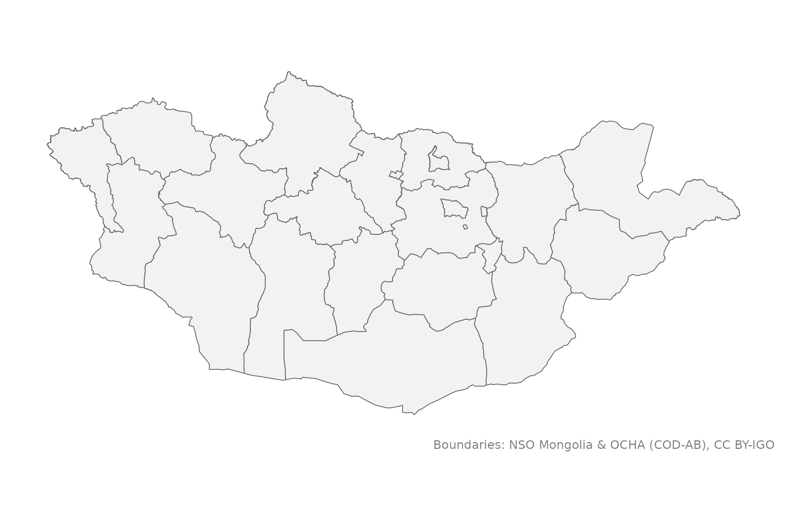
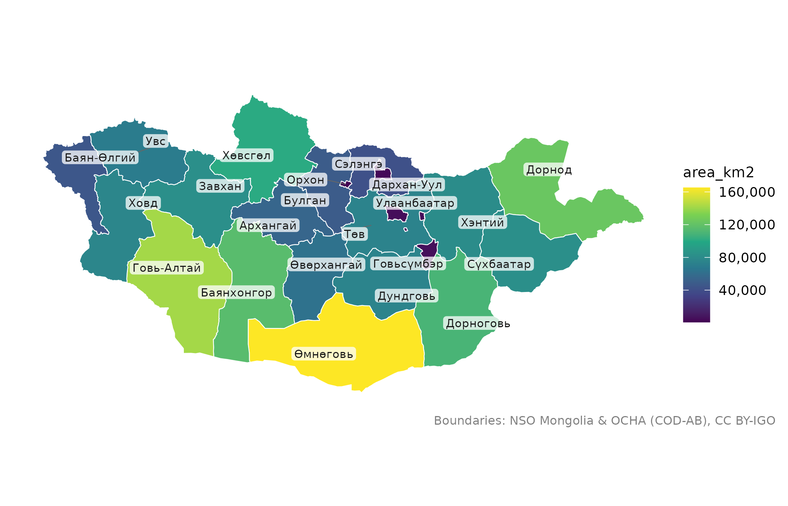
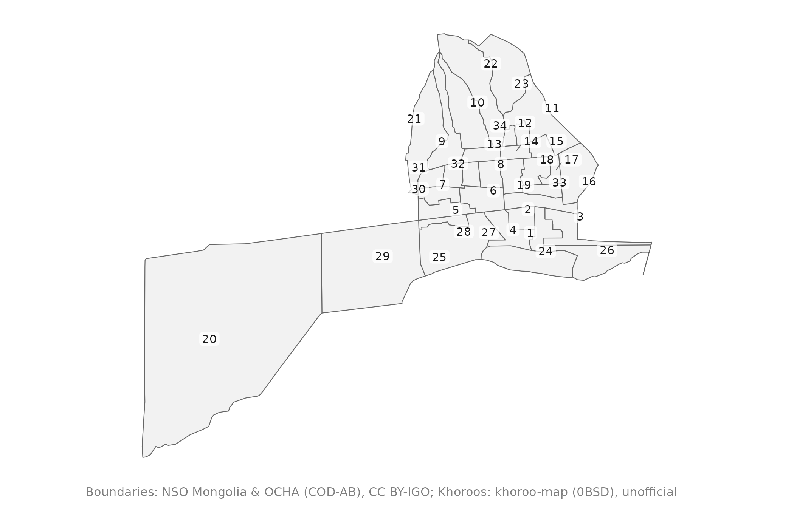
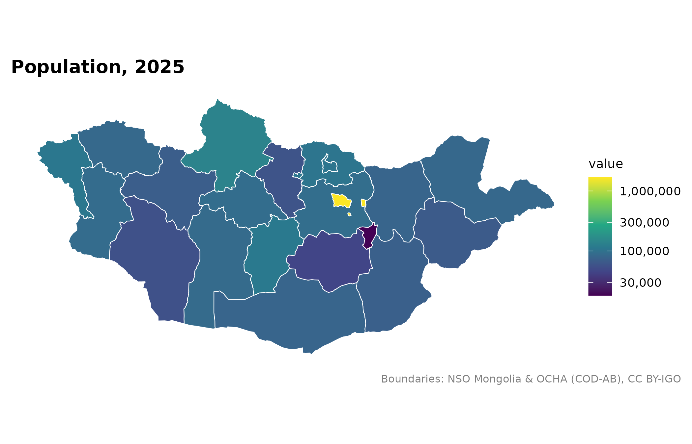
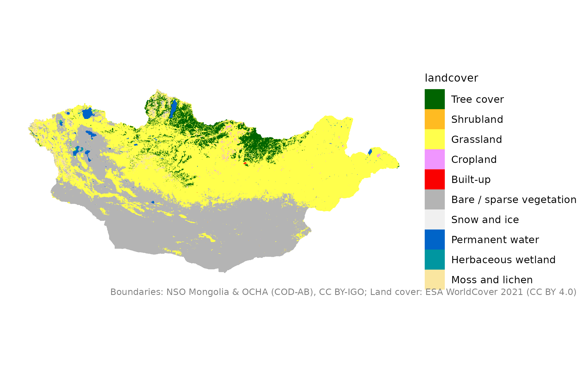
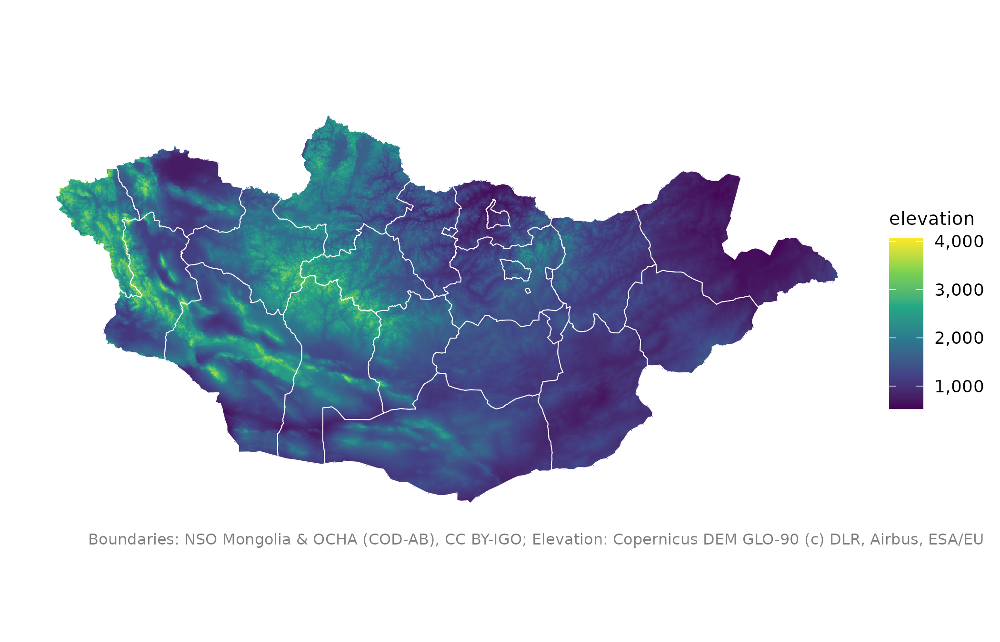

Багцын дурын газрын зураг, эсвэл өөрийн өгөгдөлтэй холбосон газрын зургийг тохиромжтой анхдагч тохиргоотой зурна: Монголд тохирсон проекц, өнгөний харалган хүмүүст ялгагдах өнгөний хуваарь, өгөгдөлгүй газарт саарал өнгө, нэр, эргэн тойрныг сонголтоор, өгөгдлийн эх сурвалжийг тайлбар мөрөөр. Үр дүн нь энгийн ggplot тул давхарга, хуваарь, загвар нэмж болно.
Usage
mn_map(
x = NULL,
fill = NULL,
trans = "identity",
label = FALSE,
context = FALSE,
crs = NULL,
lang = NULL,
caption = TRUE,
title = NULL,
label_size = 2.6
)Arguments
- x
sfобъект, ихэвчлэнmn_aimags(),mn_soums(),mn_khoroos()эсвэлmn_join()-ийн үр дүн, эсвэлmn_elevation(),mn_landcover(),mn_population()зэрэгterraрастер. Анхдагч нь аймгууд.- fill
Олигоныг будах багана (хашилтгүй), эсвэл
"steelblue"гэх мэт нэг өнгө. Тоонд тасралтгүй viridis хуваарь, тэмдэгт мөр ба factor-т салангид хуваарь өгнө.- trans
Тоон
fillхуваарийн хувиргалт, жишээ нь"log10","sqrt". Улаанбаатар бусдыг дарах үед хэрэгтэй.- label
TRUEбол нэгж бүрийг нэрээр (хороог дугаараар) нь тэмдэглэнэ, эсвэл тэмдэглэх хашилтгүй баганыг өгнө.- context
TRUEбол газрын зургийн эргэн тойронд хөрш орнууд, томоохон гол, нуурыг зурна.- crs
Проекц.
NULLбол автоматаар сонгоно: улс эсвэл түүний томоохон хэсэгт Альберсийн тэнцүү талбайт проекц, Улаанбаатар болон төвийн бүсийн жижиг газарт UTM-ийн 48N бүс.mn_crs()-ийг үзнэ үү.- lang
label = TRUEүеийн нэрийн хэл:"en","mn"эсвэл"mns".- caption
TRUEболmn_citation()-аас өгөгдлийн эх сурвалжийг нэмнэ;FALSEбол нэмэхгүй; тэмдэгт мөр өгвөл түүнийг хэвээр ашиглана.- title
Зургийн гарчиг (заавал биш).
- label_size
Нэрийн бичгийн хэмжээ.
See also
Газрын зураг зурах бусад функц:
mn_aimag_grid,
mn_crs(),
mn_label_points(),
mn_leaflet(),
theme_mn()
Examples
mn_map()

mn_map(mn_aimags(), fill = area_km2, label = TRUE)

mn_map(mn_khoroos(district = "Bayangol"), label = TRUE)

pop <- mn_example_population[mn_example_population$Year == 2025, ]
pop_map <- mn_join(pop, "Region", level = "aimag")
#> ℹ Joining at the aimag level; dropped 6 rows for larger units ("country" and
#> "region") and 2196 rows for smaller units ("soum" and "bag").
mn_map(pop_map, fill = value, trans = "log10", title = "Population, 2025")

mn_map(mn_landcover())

mn_map(mn_elevation()) + ggplot2::geom_sf(data = mn_aimags(), fill = NA, colour = "white")
